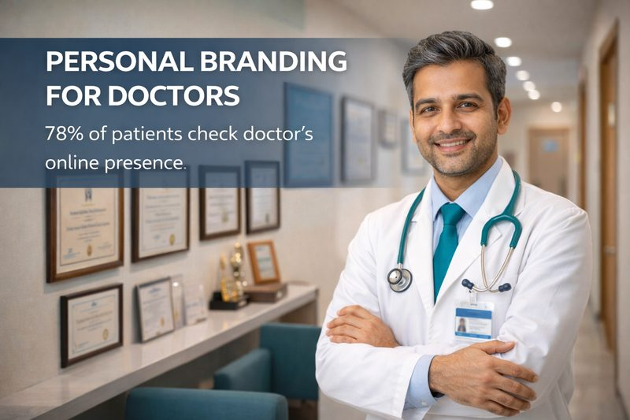

12 February, 2026
Personal Branding
11 min read
Written by SRT Digital Solutions Team
Healthcare Digital Marketing Specialists, Coimbatore | Last Updated: February 26, 2026
Patients in 2026 do not just choose a clinic — they choose a doctor. Before booking an appointment, they research who the doctor is, what they specialize in, what other patients say about them, and whether they appear credible online. This shift means that personal branding for doctors is no longer optional. It is the single most powerful differentiator in a competitive healthcare market like Coimbatore.
This guide walks you through everything you need to know about building a strong doctor personal brand — from understanding what physician branding online actually means, to creating content that establishes you as the go-to specialist in your field across Coimbatore and beyond.
Personal branding for doctors is the deliberate process of building a recognizable professional identity around your expertise, clinical philosophy, patient outcomes, and values. Unlike clinic marketing that promotes a location or a set of services, healthcare personal branding promotes you — the doctor — as a trusted, authoritative figure in your specialty.
Why does this matter so much in 2026? Consider these realities:
A strong doctor personal brand is what makes a patient choose you over the five other specialists who offer the same treatment in the same city.
Many doctors in Coimbatore confuse clinic marketing with personal branding. They are fundamentally different strategies, and understanding the distinction is essential for doctor authority building.
Example: A clinic marketing post might say "Dental implants starting at INR 25,000 at XYZ Dental Clinic." A personal branding post from the same doctor would say "Dr. Priya has placed 2,000+ dental implants with a 98% success rate. Here is what makes her approach different." The first attracts bargain-seekers. The second attracts patients who want the best.
One of the biggest frustrations doctors in Coimbatore share with us is this: "We get many inquiries, but most are only asking about fees." This is a classic symptom of weak personal branding. When patients see your clinic as a commodity, they compare on price. When they see you as an authority, they compare on trust.
Here is how physician branding online changes the type of patients you attract:
In short, personal branding does not just bring more patients. It brings better patients who respect your expertise, follow treatment plans, and refer others.
Each platform serves a different purpose in your personal branding strategy. Here is how doctors in Coimbatore can leverage the three most effective platforms in 2026:
Instagram remains the most powerful platform for doctor personal brand building in India. It is visual, fast, and where your patients spend their time.
LinkedIn is underused by doctors in India, which means there is a massive opportunity for early movers in Coimbatore to dominate their specialty.
YouTube content has the longest shelf life of any platform. A well-made video can continue generating patient inquiries for years.
Many doctors struggle with what to post. Here is a proven content framework for healthcare personal branding India that balances authority with approachability:
Nothing builds a doctor personal brand faster than being seen and heard. Record yourself answering common patient questions, explaining conditions, or sharing your opinion on health topics trending in Coimbatore and Tamil Nadu.
Share anonymized patient stories that demonstrate your clinical approach. A dermatologist in Coimbatore could document a severe acne treatment journey over 3 months. A cardiologist could explain how they managed a complex case with a multi-disciplinary approach. These stories are compelling and demonstrate real expertise.
Address common health misconceptions relevant to your specialty. "No, cracking your knuckles does not cause arthritis." "Here is why you should not use lemon juice on your skin." This type of content generates high engagement and positions you as a trusted source of accurate health information.
Patients are curious about what happens behind the clinic door. Show your morning routine, how you prepare for a surgery, your team in action, or your continuing education activities. This humanizes your brand and builds emotional connection.
Create content addressing health concerns specific to Coimbatore and Tamil Nadu — seasonal allergies, water-borne diseases during monsoon, pollution-related respiratory issues, or lifestyle diseases common in the region. This hyper-local focus strengthens your specialist branding Coimbatore positioning.
Personal branding for doctors must operate within the boundaries of medical ethics and the Indian Medical Council regulations. Here are the key principles to follow:
Ethical personal branding actually strengthens your authority. Patients and peers respect doctors who build their brand on genuine expertise rather than sensationalism. In Coimbatore's close-knit medical community, reputation integrity is paramount.
Becoming the recognized authority in your specialty within Coimbatore requires a deliberate positioning strategy. Here is how doctors build doctor online reputation that dominates their local market:
Do not try to be everything to everyone. If you are an orthopedic surgeon, position yourself as the specialist in sports injuries or joint replacements — not "general orthopedics." The more specific your positioning, the stronger your authority. A focused niche makes you the obvious choice when that specific need arises.
Ensure your personal brand appears when patients search for your specialty in Coimbatore. Optimize your Google Business Profile with your personal name, not just your clinic name. Create content that includes location-specific references — RS Puram, Peelamedu, Saibaba Colony, Race Course, Gandhipuram, and Singanallur.
Create a body of content so comprehensive in your specialty that no competitor can easily replicate it. If you are a dermatologist, aim to have the most complete collection of skin care education content referencing Coimbatore. This content moat makes it extremely difficult for competitors to outrank or outperform you online.
Participate in health camps, speak at local Coimbatore events, contribute articles to regional publications, and collaborate with other healthcare professionals. Each public appearance reinforces your authority and creates digital content opportunities.
After working with numerous doctors across Coimbatore, we have identified the three pillars that separate successful personal brands from failed attempts:
Publishing content once a month will not build a brand. You need a minimum cadence of 3-4 posts per week across your chosen platforms. This does not mean you need to create everything from scratch each time. Repurpose content across formats — a YouTube video becomes an Instagram Reel, which becomes a LinkedIn post, which becomes a carousel. Consistency signals commitment to both algorithms and patients.
Patients connect with real people, not polished corporate personas. Share your genuine clinical philosophy, your reasons for choosing your specialty, the challenges you face, and what drives you as a doctor. The doctors who build the strongest personal brands in Coimbatore are those who let their personality and passion show through their content. Perfection is not the goal — connection is.
The most effective doctor personal brands are laser-focused on a specific specialty or sub-specialty. If you are a gynecologist, focus on a specific area like fertility or high-risk pregnancies rather than general women's health. This depth of focus makes you the undeniable expert in that niche and attracts exactly the right patients.
Key Takeaway
Personal branding for doctors is not about self-promotion — it is about making your expertise visible to the patients who need it most. In Coimbatore's growing healthcare market, the doctors who invest in building a genuine, consistent, and specialty-focused personal brand are the ones who attract quality patients, command premium positioning, and build practices that grow predictably year after year.
Personal branding for doctors is the process of building a recognizable professional identity around your expertise, values, and patient outcomes. It matters because patients in 2026 choose doctors based on perceived authority and trust, not just clinic proximity. A strong doctor personal brand attracts quality patients who value your specialty, reduces price-sensitive inquiries, and positions you as the go-to expert in your field within Coimbatore.
Clinic marketing promotes a location, services, and offers. Personal branding promotes the doctor as a trusted authority. Clinic marketing says "we offer dental implants at affordable rates." Personal branding says "Dr. Sharma has placed 2,000+ implants with a 98% success rate." The personal brand travels with the doctor regardless of which clinic they practice at, building long-term career value.
Instagram is the most effective platform for visual specialties like dermatology, dentistry, and cosmetic surgery. LinkedIn is ideal for building professional credibility and connecting with referral networks. YouTube works best for in-depth treatment explanations and establishing long-term authority. For doctors in Coimbatore, a combination of Instagram for patient acquisition and LinkedIn for professional positioning delivers the strongest results in 2026.
Building a recognizable doctor personal brand typically takes 6-12 months of consistent effort. The first 3 months focus on establishing your content pillars and visual identity. By months 4-6, you start seeing engagement growth and inbound inquiries. By months 9-12, you can expect to be recognized as a specialist authority in your local market like Coimbatore. The key is consistent, quality content aligned with your specialty.
Book a free personal branding consultation and get a customized strategy to establish your authority online in Coimbatore.
Book Free Branding Consultation